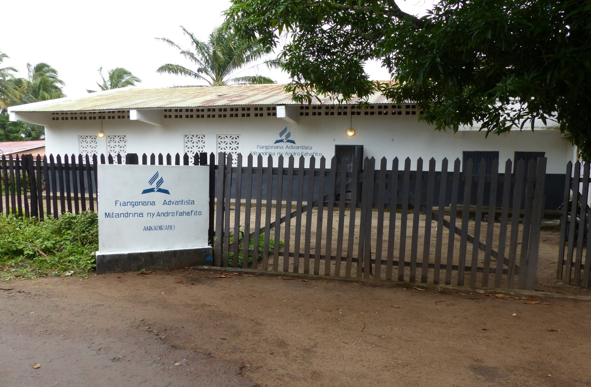
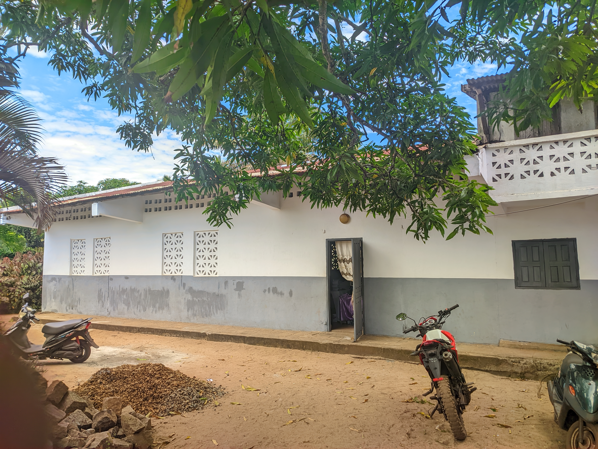
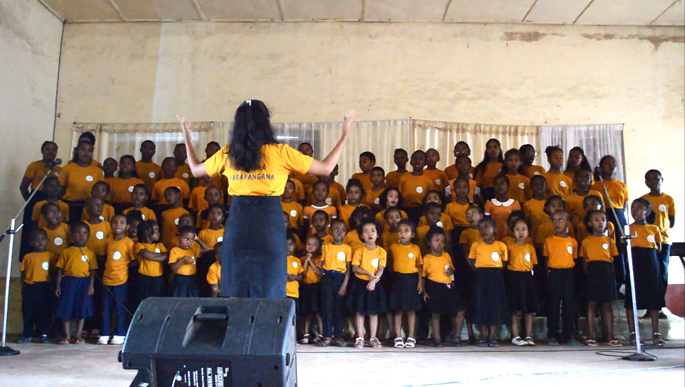
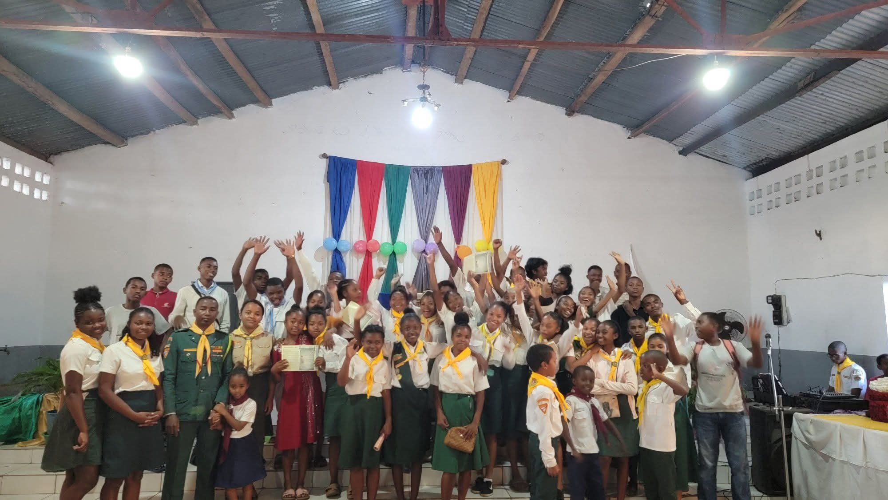
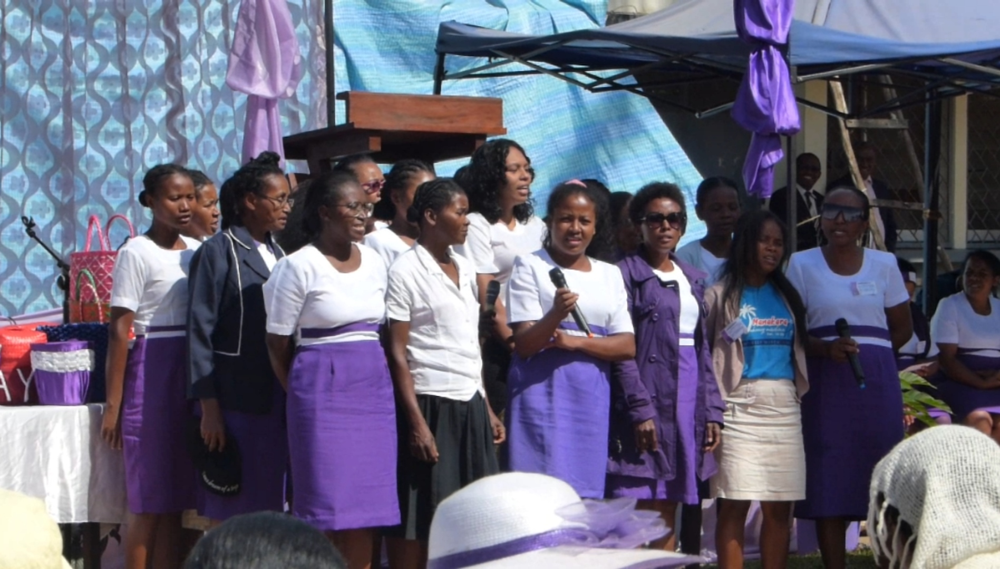

KOMITY
- Pasitora: Pasteur Fidèle
- Loholona: Loh TSIKAMO, Loh Richard, Loh Talema
- Sekretera: Mme Pascaline & Mme Nicole
- Trésorier: Mme Pascaline & Mme Nadia
- Filohan'ny diakona lahy: Loh Richard
- Filohan'ny diakona vavy: Mme Nicole

ASAFI
- Filoha:
- Lefitra:
- Sekretera:
- Mpiara-miasa
DIAKONA
- Filohan'ny diakona lahy: Loh Richard
- Filohan'ny diakona vavy: Mme Nicole
- Diakona lahy:
- Diakona vahy:

MINENF
- Filoha:
- Lefitra:
- Sekretera:
- Mpiara-miasa:
CHORAL LMCAF
- Filoha: Mme Lydia Namasy
- Lefitra: Mme Sandrina
- Sekretera:

MJA
- Filoha:
- Lefitra:
- Sekretera:
- Mpanolo-tsaina: Chft Fulica Généreuse, Chef Cabri Méticuleux
- Coordonnateur régional: Chef Impala
- Coordonnateur régional des aventuries: Chft Olesia
- Coordonateur District: Chef Bienvenu
SEKOLY SABATA
- Filoha: Mme Sandrina
- Filoha lefitra: Mme Nicole
- Sekretera:
- Mpiara-miasaMlle Marco, Mlle Manuella
FAHASALAMANA
- Filoha:
- Lefitra:
- Sekretera:
- Mpiara-miasa
FIPIA
- Fianakaviana: Loh TSIKAMO

MIFEM
- Filoha: Mme Sam Elisa
- Lefitra: Mme Angela
- Sekretera:
Vakiteny Androany: